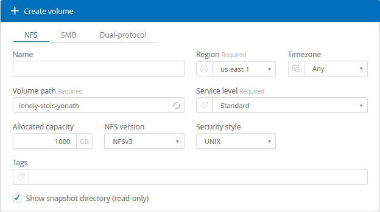
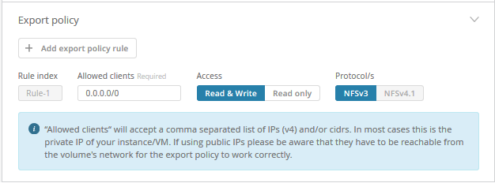

リリースノート
リリースノート
クラウドボリュームを作成
 変更を提案
変更を提案
Cloud Volume は、ネットアップクラウドオーケストレーションツールサイトから作成します。
前提条件
最初のクラウドボリュームを作成する前に、 AWS 環境が特定の要件を満たしている必要があります。Cloud Volume を導入する AWS リージョンごとに、次の情報が必要です。
-
仮想プライベートクラウド（ VPC ）
-
VPC に接続された Virtual Private Gateway （ VGW ；仮想プライベートゲートウェイ）
-
VPC のサブネット
-
Cloud Volume を実行するネットワークを含むルートが定義されています
-
必要に応じて、 Direct Connect Gateway
リージョンに最初のクラウドボリュームを作成する際には、次の情報を確認しておく必要があります。
-
* AWS アカウント ID * ：ダッシュを表示しない 12 桁の Amazon アカウント ID です。
-
* Classless Inter-Domain Routing （ CIDR ） Block * ：未使用の IPv4 CIDR ブロック。ネットワークプレフィックスの範囲は /16 ~ /28 である必要があり、またプライベートネットワーク用に予約された範囲内である必要があります（ RFC 1918 ）。VPC CIDR の割り当てと重複するネットワークは選択しないでください。
-
サービスを使用する正しいリージョンを選択しておく必要があります。を参照してください "リージョンを選択します"。
必要な AWS ネットワークコンポーネントを設定していない場合は、を参照してください "NetApp Cloud Volumes Service for AWS アカウントのセットアップ" 詳細については、『ガイド』を参照
-
注： * SMB ボリュームを作成する場合は、接続可能な Windows Active Directory サーバが必要です。この情報は、ボリュームの作成時に入力します。また、管理者ユーザが指定された Organizational Unit （ OU ；組織単位）パスでマシンアカウントを作成できることを確認してください。
ボリュームの詳細を入力します
ボリュームの作成ページの上部にあるフィールドに必要な情報を入力して、ボリューム名、サイズ、サービスレベルなどを定義します。
-
にログインしたあとに "NetApp Cloud Orchestrator" サブスクリプション中に指定した電子メールアドレスを持つサイト "リージョンを選択しました"をクリックし、 * 新しいボリュームの作成 * ボタンをクリックします。
 -
Create Volume （ボリュームの作成）ページで、作成するボリュームのプロトコルとして * nfs * 、 * smb * 、または * Dual-protocol * を選択します。
-
名前 * フィールドで、ボリュームに使用する名前を指定します。
-
[* Region] * フィールドで、ボリュームを作成する AWS リージョンを選択します。このリージョンは、 AWS で設定したリージョンと同じである必要があります。
-
［ * タイムゾーン * ］ フィールドで、タイムゾーンを選択します。
-
[* ボリューム・パス * ] フィールドで、使用するパスを指定するか、自動生成されたパスを受け入れます。
-
「 * サービスレベル * 」フィールドで、ボリュームのパフォーマンスレベルを「 * Standard * 」、「 * Premium * 」、または「 * Extreme * 」から選択します。
を参照してください "サービスレベルを選択しています" を参照してください。
-
[* Allocated capacity * （割り当て容量 * ） ] フィールドで、必要な容量を選択します。使用可能な inode の数は、割り当てられている容量によって異なります。
を参照してください "割り当て容量を選択しています" を参照してください。
-
NFS version * フィールドで、要件に応じて * nfsv3 * 、 * NFSv4.1 * 、または * both * を選択します。
-
デュアルプロトコルを選択した場合は、ドロップダウンメニューから NTFS または UNIX を選択して、 [ セキュリティスタイル *] フィールドでセキュリティスタイルを選択できます。
セキュリティ形式は、使用するファイル権限の種類と権限の変更方法に影響します。
-
UNIX では NFSv3 モードビットが使用され、 NFS クライアントのみが権限を変更できます。
-
NTFS では NTFS ACL が使用され、 SMB クライアントのみが権限を変更できます。
-
-
Show snapshot directory * フィールドでは、このボリュームの Snapshot ディレクトリを表示できるデフォルトの場所をそのまま使用するか、ボックスをオフにして Snapshot コピーのリストを非表示にします。
ネットワークの詳細を入力（ AWS リージョンごとに 1 回限りの設定）
この AWS リージョンで初めてクラウドボリュームを作成した場合は、 Cloud Volume アカウントを AWS アカウントに接続できるように「 * Network * 」セクションが表示されます。
-
*CIDR (IPv4) * フィールドに、リージョンに希望する IPv4 範囲を入力します。ネットワークプレフィックスの範囲は /16 ～ /28 です。また、このネットワークはプライベートネットワーク用に予約された範囲内にある必要があります（ RFC 1918 ）。VPC CIDR の割り当てと重複するネットワークは選択しないでください。
-
「 * AWS account ID * 」フィールドに、 12 桁の Amazon アカウント ID をダッシュなしで入力します。

エクスポートポリシールールを入力（オプション）
NFS またはデュアルプロトコルを選択した場合は、 * エクスポートポリシー * セクションでエクスポートポリシーを作成して、ボリュームにアクセスできるクライアントを特定できます。
-
[ * 許可されたクライアント * ] フィールドで、 IP アドレスまたは Classless Inter-Domain Routing （ CIDR ）を使用して、許可するクライアントを指定します。
-
[Access] フィールドで、 [*Read&Write] または [Read Only] を選択します。
-
Protocols * フィールドで、ユーザアクセスに使用するプロトコル（ NFSv3 アクセスと NFSv4.1 アクセスの両方をボリュームで許可する場合はプロトコル）を選択します。

追加のエクスポートポリシールールを定義する場合は、 * + Add export policy rule * をクリックします。
データ暗号化を有効にする（オプション）
-
SMB またはデュアルプロトコルを選択した場合は、 [* SMB3 プロトコル暗号化を有効にする * ] フィールドのチェックボックスをオンにすると、 SMB セッションの暗号化を有効にできます。
-
注： * SMB 2.1 クライアントでボリュームのマウントが必要な場合は、暗号化を有効にしないでください。
-
ボリュームを Active Directory サーバ（ SMB およびデュアルプロトコル）と統合する
SMB またはデュアルプロトコルを選択した場合は、「 * Active Directory * 」セクションでボリュームを Windows Active Directory サーバまたは AWS Managed Microsoft AD と統合できます。
[ 使用可能な設定 * ] フィールドで、既存の Active Directory サーバーを選択するか、新しい AD サーバーを追加します。
新しい AD サーバへの接続を設定するには、次の手順を実行します。
-
*DNS サーバ * フィールドに、 DNS サーバの IP アドレスを入力します。複数のサーバを参照する場合は、カンマを使用して IP アドレスを区切ります。たとえば、 172.31.25.223 、 172.31.2.74 のようになります。
-
[* Domain*] フィールドに、 SMB 共有のドメインを入力します。
AWS Managed Microsoft AD を使用する場合は、「 Directory DNS name 」フィールドの値を使用します。
-
[* SMB Server NetBIOs] フィールドに、作成する SMB サーバの NetBIOS 名を入力します。
-
［ * 組織単位 * ］ フィールドに、自分の Windows Active Directory サーバーに接続するための「 CN=Computers 」と入力します。
AWS Managed Microsoft AD を使用する場合は、組織単位を「 OU=<NetBIOS_name> 」の形式で入力する必要があります。たとえば、 * OU=AWSmanagedAD* と入力します。
ネストされた OU を使用するには、最上位レベルの OU に最初に最下位レベルの OU を呼び出す必要があります。例： * OU=THIRDLEVEL 、 OU=secondlevel 、 OU=FIRSTLEVEL* 。
-
[Username] フィールドに、 Active Directory サーバのユーザ名を入力します。
SMB サーバの追加先となる Active Directory ドメイン内のマシンアカウントの作成が許可されている任意のユーザ名を使用できます。
-
[* パスワード *] フィールドに、指定した AD ユーザ名のパスワードを入力します。

を参照してください "Active Directory ドメインサービスのサイトトポロジの設計" 最適な Microsoft AD 実装の設計に関するガイドラインについては、を参照してください。
を参照してください "NetApp Cloud Volumes Service for AWS を使用した AWS ディレクトリサービスのセットアップ" AWS Managed Microsoft AD の使用手順の詳細については、ガイドを参照してください。

クラウドボリュームが Windows Active Directory サーバと正しく統合されるようにするには、 AWS セキュリティグループ設定に関するガイダンスに従う必要があります。を参照してください "Windows AD サーバ用の AWS セキュリティグループの設定" を参照してください。 -
注： * NFS を使用してボリュームをマウントしている UNIX ユーザは、 UNIX root の場合は Windows ユーザ「 root 」、その他すべてのユーザの場合は「 pcuser 」として認証されます。NFS を使用するときにデュアルプロトコルボリュームをマウントする前に、これらのユーザアカウントが Active Directory に存在していることを確認してください。
-
Snapshot ポリシーを作成する（オプション）
このボリュームの Snapshot ポリシーを作成する場合は、「 * Snapshot policy * 」セクションに詳細を入力します。
-
Snapshot の頻度として、「 * Hourly * 」、「 * Daily * 」、「 * Weekly * 」、または「 * Monthly * 」を選択します。
-
保持する Snapshot の数を選択します。
-
Snapshot を作成する時刻を選択します。

追加の Snapshot ポリシーを作成するには、上記の手順を繰り返します。または、左側のナビゲーション領域から Snapshot （スナップショット）タブを選択します。
ボリュームを作成します
-
ページの一番下までスクロールし、 * Create Volume * （ボリュームの作成）をクリックします。
このリージョンにすでにクラウドボリュームを作成している場合は、ボリュームページに新しいボリュームが表示されます。
この AWS リージョンで最初に作成したクラウドボリュームで、このページのネットワークセクションにネットワーク情報を入力すると、ボリュームを AWS インターフェイスに接続するために実行する必要がある次の手順を示す進捗状況ダイアログが表示されます。

-
のセクション 6.4 に記載されている仮想インターフェイスを受け入れます "NetApp Cloud Volumes Service for AWS アカウントのセットアップ" ガイドこのタスクは 10 分以内に実行する必要があります。実行しないと、システムがタイムアウトする場合があります。
インターフェイスが 10 分以内に表示されない場合は、設定問題が存在する可能性があります。その場合は、サポートにお問い合わせください。
インターフェイスおよびその他のネットワークコンポーネントが作成されると、作成したボリュームが Volumes （ボリューム）ページに表示され、 Actions （アクション）フィールドが Available （使用可能）と表示されます。

に進みます "クラウドボリュームをマウント"。